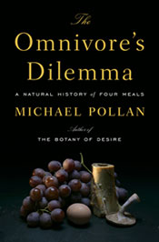

The Omnivore's Dilemma
I finally got around to reading
Michael Pollan's excellent
book,
The
Omnivore's Dilemma: A Natural History of Four Meals. It
goes on my list of books that everyone should read. It paints a
disturbing picture of the modern industrial food system, that is
now up there with global warming on my list of things to worry
about. But the book is hopeful too. The system can be fixed, and
the movement to fix it is growing. One of the advantages of living
near San Francisco is that this is an area where a lot of folks
concerned about this problem are active. There are a lot of
paradoxes to sort out: the human population of the planet has
become immense, and it's not clear that sustainable healthy
techniques can feed us all.